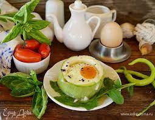

Что поесть на затрак?
Часто мы задумываемся о том, что бы поесть утром c пользой...
| Завтрак | КБЖУ на 100 г | |||
| Калории | Белки | Жиры | Углеводы | |
| Яйца глазунья с салатом | 150 | 5,5 г | 11 г | 7,2 г |
| Овсянка в фруктами | 148 | 5,6 г | 4,6 г | 22,6 г |
| Яйца в «гнездышках» из перца | 132 | 7 г | 8,5 г | 16,6 г |
Ингредиенты для блюда "яйца в «гнездышках» из перца".
- перец — 2 шт.
- яйца куриные — 2 шт.
- измельченный твердый сыр — 2 ст. л.
- помидоры черри — 2–4 шт.
- базилик — по вкусу